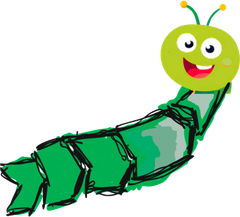

Prozessmanagement, erklärt wie in der Sendung mit der Maus.
Aufgebaut wie beim Sprachenlernen: A1 und A2 legen das Fundament, B1 und B2 machen dich sicher in der Praxis. Ab C1 wählst du deine Vertiefung, C2 ist der Blick aufs ganze Unternehmen.
Fehlt dir ein Thema? Sag's mir, dann grab ich mich rein.
Die Lernwerkstatt ist ein Hobbyprojekt und wächst mit euren Wünschen. Was hilft dir, was fehlt, worüber soll die nächste Lektion gehen?
Dein Feedback ist unterwegs. Aus den Wünschen werden neue Lektionen.
Karte antippen, Erklärung lesen, ehrlich sein. Was noch nicht sitzt, kommt in der nächsten Runde wieder.
Aus dem Praxiswissen der Prozessberatung. Fürs Handy im nächsten Gespräch.
Wer hat wann was genau zu tun?
Solange eine dieser drei Lücken offen ist, ist der Prozess nicht verstanden.
Du bist erfahrener Prozessberater. Hier ist ein Ablauf aus einem kleinen Betrieb, so wie die Mitarbeitenden ihn beschreiben: [Ablauf Schritt für Schritt einfügen, ohne Namen und vertrauliche Daten] 1. Wo siehst du Schwachstellen (Wartezeiten, doppelte Arbeit, unklare Zuständigkeit)? 2. Für jeden Schritt: Wer macht wann was genau? Wo ist das unklar? 3. Schlag einen verbesserten Ablauf vor und begründe jede Änderung in einem Satz. Schreib einfach und ohne Fachbegriffe, so dass es ein Geschäftsführer ohne Vorwissen versteht.
Keine Namen, Kundendaten oder Firmengeheimnisse eingeben. Das Ergebnis ist ein Gesprächsanlass, keine Wahrheit.